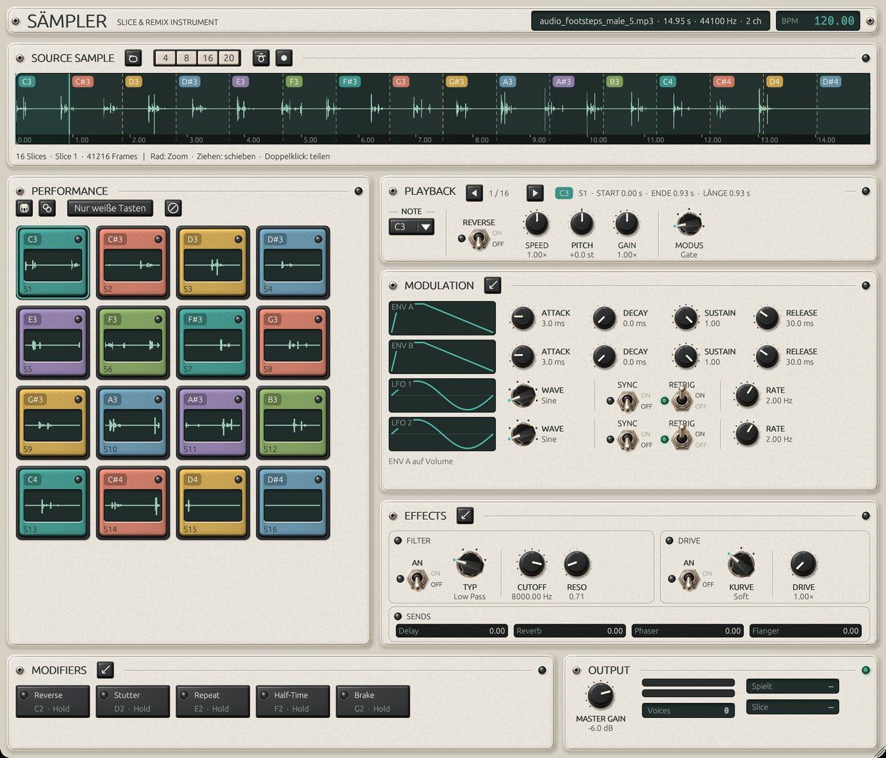
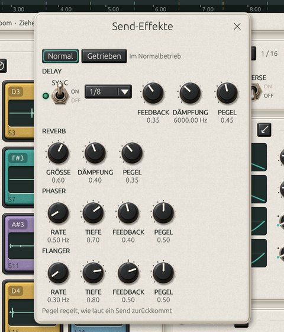
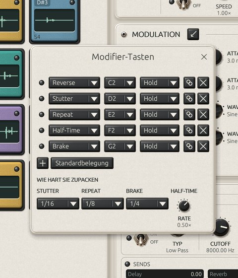

Slicen
In 4, 8, 16 oder 20 gleiche Teile oder von Hand per Doppelklick in die Wellenform. Marker lassen sich verschieben und wieder entfernen. Auf Wunsch landen die Slices nur auf weißen Tasten.
VST3 · CLAP · Standalone für Windows, macOS und Linux
Sämpler zerlegt ein Sample in bis zu zwanzig Slices und legt sie auf die Tastatur. Jede Taste hat ihre eigenen Einstellungen. Derselbe Slice kann auf C3 ganz normal laufen, auf D3 rückwärts und auf E3 als Loop, der mit jedem Durchgang kürzer wird. Mit fünf Modifier-Tasten greifst du beim Spielen ein.
Open Source unter GPL-3. Kostenlos, ohne Konto und ohne Telemetrie.
Signalweg
Eine Cell zeigt nur auf einen Slice. Zehn Cells auf demselben Slice brauchen deshalb nicht mehr Speicher als eine.
Die Modifier liegen ab C2 auf eigenen Tasten: Reverse, Stutter, Repeat, Half-Time und Brake. Jeder lässt sich halten, umschalten oder für den nächsten Anschlag vormerken. Was die rechte Hand gerade spielt, ändert sich sofort.
Vier weitere Tasten schicken alles in Delay, Reverb, Phaser oder Flanger. Von jedem Effekt gibt es dafür eine zweite, kräftigere Einstellung. Taste loslassen, und es klingt wieder wie vorher.
Alles auf einer Seite: oben das Sample, links die Pads, rechts die Einstellungen der Cell, die du gerade bearbeitest.



In 4, 8, 16 oder 20 gleiche Teile oder von Hand per Doppelklick in die Wellenform. Marker lassen sich verschieben und wieder entfernen. Auf Wunsch landen die Slices nur auf weißen Tasten.
Gate, One-Shot, Loop, Repeat und Collapse. Collapse spielt den Slice einmal durch und wiederholt dann sein Ende, jedes Mal etwas kürzer. Mit Release-Trigger beginnt der Loop erst beim Loslassen.
Zwei Hüllkurven, zwei LFOs mit sechs Wellenformen und eine Matrix mit acht Routen. Ziele sind Lautstärke, Panorama, Pitch, Rate, Loop-Länge, Cutoff, Resonanz und Drive. Die LFOs laufen frei oder im Host-Tempo.
Jede Cell hat ein eigenes Filter (Tiefpass, Hochpass, Bandpass, Notch) und eine Sättigung mit drei Kennlinien. Delay mit Tempo-Sync, Reverb, Phaser und Flanger teilen sich alle Cells.
Zwanzig feste Bänke, eine pro Slice, mit Gain, Pitch, Speed, Cutoff und Reverb-Anteil. Dazu kommen die vier Send-Pegel. Die Werte wirken relativ zur Einstellung der Cell, eine leere Spur ändert also nichts.
Im Audio-Thread wird nichts gesperrt, nichts allokiert und keine Datei gelesen. Stimmen sind vorab angelegt, Befehle laufen über lockfreie Queues. Die Tests laufen mit eingeschalteter Allokationsprüfung.
Installer für Windows und macOS sowie ZIP-Archive für alle drei Systeme gibt es auf der Release-Seite.
Aktuelle Version: 0.1.0
Saempler-Setup-*.exe ausführen. Oder das ZIP entpacken und
die Bundles nach C:\Program Files\Common Files\VST3 bzw.
CLAP kopieren.
Saempler-*.pkg öffnen. Das Paket ist noch nicht notarisiert,
deshalb meldet sich Gatekeeper. Unter Systemeinstellungen, Datenschutz &
Sicherheit auf „Trotzdem öffnen" klicken.
ZIP entpacken und die Bundles nach ~/.vst3 bzw.
~/.clap legen. Die Standalone-Version startet direkt.
Sämpler ist kostenlos und bleibt es. Wer die Arbeit daran unterstützen möchte, kann das über GitHub Sponsors tun.
♥ Entwicklung unterstützen